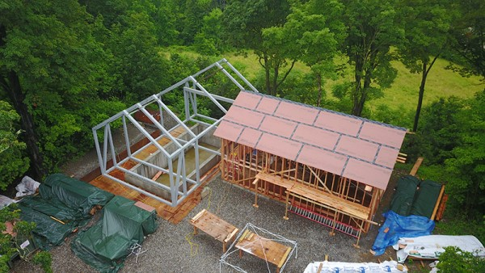
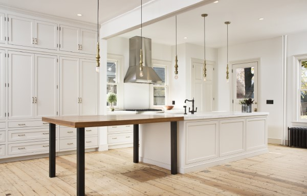
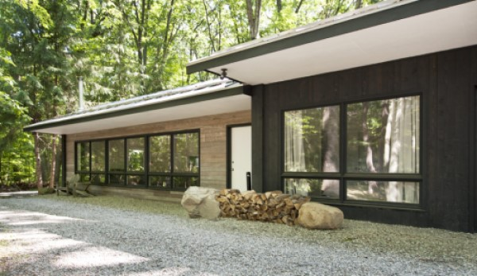
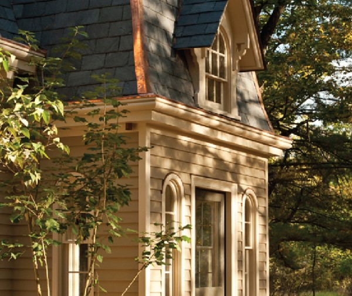
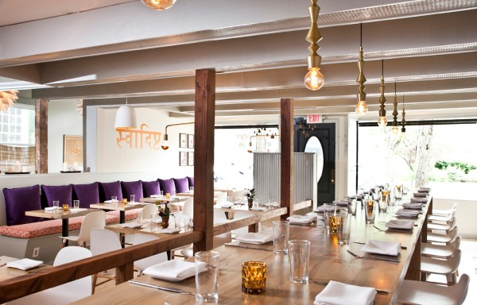

new construction contracting
We can be general contractors on architect-designed projects. As a design-oriented construction firm, we partner seamlessly architects who want quality execution with a keen eye to detail. We also add value in a dialogue with an architect as we help to value-engineer a project to be more cost-effective without sacrificing key design elements.
| 
|
|  |
additions and renovations
We bring our best practices in construction and our modern design sensibility to bear as we renovate homes. We strive to capture the house’s intrinsic character while layering in the new vision of the owner. Our knowledge of architectural history and the local building vernacular allows us to make bold gestures while being sensitive to the building’s original features. |
adaptive reuse
We are keenly interested in the repurposing of agricultural buildings, carriage houses, garages, churches or schools. In the Hudson Valley, this largely means barns, where the interior is open and modern, loft-like interiors can be created. We are also experienced with the problems typical of these structures and have proven strategies to address them.
| 
|
| 
| historic preservation
We love historic buildings. We have a passion for working on projects that seek to preserve historical aspects of a property. We also have a particular interest in “hybrid” projects that faithfully preserve a building (or a part of a building) while adding a modern wing or introducing surprising elements like an unapologetically modern kitchen into an otherwise historic building.
|
commercial projects
The Art of Building also designs and builds commercial projects, including restaurants, hotels, offices and spas. In commercial projects, the design serves a business objective. Our practical approach to design allows us to create exciting spaces that are the same time stylish,functional and cost-effective.
| 
|